Xv6代码导读 南大
overview¶
- 应用视角的操作系统：对象+API
- 把操作系统当成提供服务的”黑盒子“
操作系统就是一组操作系统里的对象,和一组可以控制这些对象的API对吧
- 这些对象可以是进程 也就是状态机
- 可以是可以进程之间通信的管道
- 也可以是一个数据文件，只允许你使用那些计算的指令的话, 你其实是做不到这一点的, 你必须要借助一条系统调用的指令
启动¶
make qemu：启动了一个qemu-system-riscv64 -machine virt的虚拟机
操作系统调用¶
xv6中有最常用的系统调用，不算网络编程的，这个api就足够完成所有lab
- 就是这些api，支撑了操作系统相当大的一部分功能
项目的构建与运行¶
- mkfs：是文件系统的工具
- kernel是操作系统的内核
- user就是一些用户程序
RTFSC: Makefile
-
相比 AbstractMachine (跨平台/体系结构) 容易很多
-
先找到构建目标
-
然后老规矩:
make -nB，方便查看编译的所有过程 -
你可以根据需要修改一些配置
- 优化等级、CPU 数、编译指令等
- smp：多处理器的个数，改为1，方便调试；在不希望调多处理器并行的时候；大幅简化调试流程
编译操作系统实际上就是编译、链接，然后加载的过程
复习：“程序的执行 (状态变化序列) 有时比代码 (状态机) 更容易理解”
- 可以用于配制 vscode
- Quick quiz: 如何自动生成
compile_commands.json?
文件有编译选项，每个文件的编译选项（就是宏）可能不一样，在vscode可能不生效
系统有一个Bear工具，叫Build Ear
专门为编译生成所有的编译选项，试图去劫持编译器，把编译选项扒出来
相当于把这个程序包起来，这个程序相当于子进程，（bear应该是用hook实现的）
这个时候compile_commands.json就都有了，比如说编译kalloc.c的选项是这些，这样vscode里的宏就会生效
{ "arguments": [ "riscv64-linux-gnu-gcc", "-c", "-Wall", "-Werror", "-O", "-fno-omit-frame-pointer", "-ggdb", "-DSOL_UTIL", "-mcmodel=medany", "-ffreestanding", "-fno-common", "-nostdlib", "-mno-relax", "-I.", "-fno-stack-protector", "-fno-pie", "-no-pie", "-o", "kernel/kalloc.o", "kernel/kalloc.c" ], "directory": "/home/lsl/Desktop/code/study/MIT6.S081/xv6-labs-2020", "file": "kernel/kalloc.c" },工具就是第一生产力，
.gdbinit这个文件是xv6生成的：gdb刚启动需要做很多gdb的命令，每次需要重新输；这个文件可以在每次gdb运行的时候，都默认执行这些脚本（学习打断点之类的操作，如果每次都需要做，甚至可以直接写入到该文件中）
set confirm off
set architecture riscv:rv64
# target remote 127.0.0.1:26000
symbol-file kernel/kernel
set disassemble-next-line auto
set riscv use-compressed-breakpoints yes
代码导读¶
init¶
user/init.c：第一个用户态的进程
// init: The initial user-level program
#include "kernel/types.h"
#include "kernel/stat.h"
#include "kernel/spinlock.h"
#include "kernel/sleeplock.h"
#include "kernel/fs.h"
#include "kernel/file.h"
#include "user/user.h"
#include "kernel/fcntl.h"
char *argv[] = { "sh", 0 };
int
main(void)
{
int pid, wpid;
// 打开一个叫console的文件
// 打开失败，创造一个，然后再打开
if(open("console", O_RDWR) < 0){
mknod("console", CONSOLE, 0);
open("console", O_RDWR);
}
dup(0); // stdout
dup(0); // stderr
for(;;){
printf("init: starting sh\n");
pid = fork();
if(pid < 0){
printf("init: fork failed\n");
exit(1);
}
if(pid == 0){
exec("sh", argv);
printf("init: exec sh failed\n");
exit(1);
}
for(;;){
// this call to wait() returns if the shell exits,
// or if a parentless process exits.
wpid = wait((int *) 0);
if(wpid == pid){
// the shell exited; restart it.
break;
} else if(wpid < 0){
printf("init: wait returned an error\n");
exit(1);
} else {
// it was a parentless process; do nothing.
}
}
}
}
进程=运行的状态机，然后这个进程在初始的时候，他其实一个文件描述符都没有对吧
操作系统上运行的所有程序都有stdin，stdout和stderr这3个文件描述符
- 操作系统刚启动时可能什么东西都没有，它要调用几个系统调用，
- 先要试图去打开console，打开失败先用系统调用把console创建出来，再系统调用open打开
- 然后两个dup(0)，打开stdout、stderr
最初的进程开始init执行代码以后，就做了以上这些事情
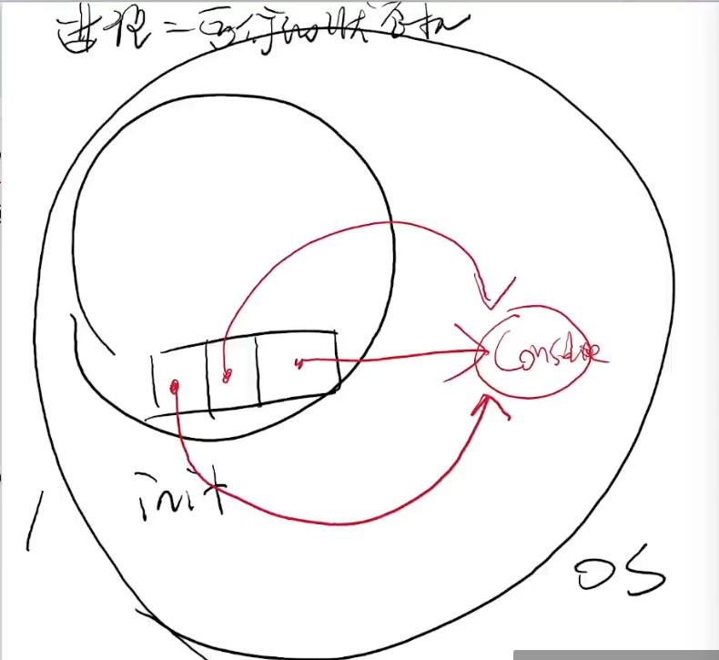
然后不断地fork、exec，不断重复这个循环，就是sh程序
每次ctrl+D结束输入的话，这个sh会再次启用，所以程序不会终止，操作系统是不会终止的，
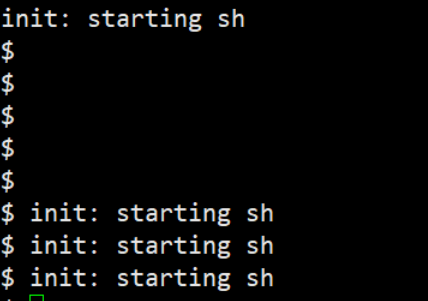
可以看看用户程序是怎么编译出来的，
{
"arguments": [
"riscv64-linux-gnu-gcc",
"-c",
"-Wall",
"-Werror",
"-O",
"-fno-omit-frame-pointer", // 可以做back trace
"-ggdb",
"-DSOL_UTIL",
"-mcmodel=medany",
"-ffreestanding",
"-fno-common",
"-nostdlib", // 没有标准库
"-mno-relax",
"-I.",
"-fno-stack-protector",
"-fno-pie",
"-no-pie",
"-o",
"user/ln.o",
"user/ln.c"
],
"directory": "/home/lsl/Desktop/code/study/MIT6.S081/xv6-labs-2020",
"file": "user/ln.c"
},
一个可执行的二进制文件shell
- -e entry，入口地址是main
- -Ttext，是0，它期望加载是0的地方
- -o user/_sh，所以说所有下划线开头的才是真正的可执行文件
- 然后把底下的四个文件都链接到一起
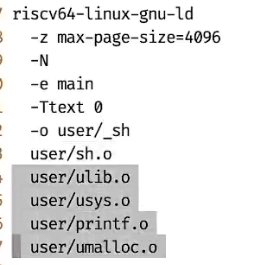
xv6的进程有一个这样的初始状态，就是操作系统进程的地址空间
- trampoline、trapframe是操作系统持有的，进程是访问不了的
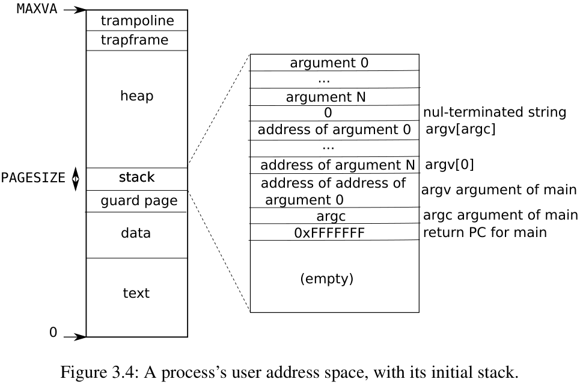
initcode¶
可执行文件前头没有下划线，所以它不会被加载到操作系统，而是在xv6里
- userinit()会在系统基本接近于初始化完毕的时候，会创建出第一个进程，这个进程就是initcode
// kernel/proc.c
// a user program that calls exec("/init")
// od -t xC initcode
uchar initcode[] = {
0x17, 0x05, 0x00, 0x00, 0x13, 0x05, 0x45, 0x02,
0x97, 0x05, 0x00, 0x00, 0x93, 0x85, 0x35, 0x02,
0x93, 0x08, 0x70, 0x00, 0x73, 0x00, 0x00, 0x00,
0x93, 0x08, 0x20, 0x00, 0x73, 0x00, 0x00, 0x00,
0xef, 0xf0, 0x9f, 0xff, 0x2f, 0x69, 0x6e, 0x69,
0x74, 0x00, 0x00, 0x24, 0x00, 0x00, 0x00, 0x00,
0x00, 0x00, 0x00, 0x00
};
riscv64-linux-gnu-objdump -d initcode.out: 这条命令的作用是使用 RISC-V 架构的交叉工具链 中的 objdump 工具，对 initcode.out 文件进行**反汇编**，并显示其汇编代码
把7放到寄存器a7里面，执行ecall指令
lsl@ubuntu:~/Desktop/code/study/MIT6.S081/xv6-labs-2020/user$ riscv64-linux-gnu-objdump -d initcode.out
initcode.out： 文件格式 elf64-littleriscv
Disassembly of section .text:
0000000000000000 <start>:
0: 00000517 auipc a0,0x0
4: 02450513 addi a0,a0,36 # 24 <init>
8: 00000597 auipc a1,0x0
c: 02358593 addi a1,a1,35 # 2b <argv>
10: 00700893 li a7,7
14: 00000073 ecall
0000000000000018 <exit>:
18: 00200893 li a7,2
1c: 00000073 ecall
20: ff9ff0ef jal ra,18 <exit>
0000000000000024 <init>:
24: 696e692f 0x696e692f
28: 0074 addi a3,sp,12
...
000000000000002b <argv>:
2b: 0024 addi s1,sp,8
2d: 0000 unimp
2f: 0000 unimp
31: 0000 unimp
...
- xv6在操作系统里创建的第一个状态机，实际上就是一小段汇编代码；这一小段initcode会执行exec，然后执行
_init，然后_init在执行init节中的代码
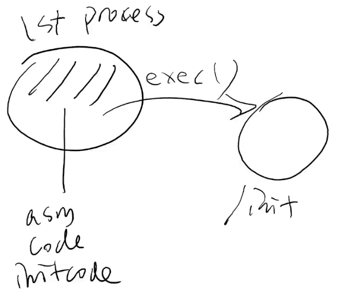 - initcode这一小部分跳板代码，直接用uvminit创建一个新的地址空间，然后把initcode这部分代码搬进来，搬进来，然后就可以让第一个进程去执行
// Set up first user process.
void
userinit(void)
{
struct proc *p;
p = allocproc();
initproc = p;
// allocate one user page and copy init's instructions
// and data into it.
uvminit(p->pagetable, initcode, sizeof(initcode));
p->sz = PGSIZE;
// prepare for the very first "return" from kernel to user.
p->trapframe->epc = 0; // user program counter
p->trapframe->sp = PGSIZE; // user stack pointer
safestrcpy(p->name, "initcode", sizeof(p->name));
p->cwd = namei("/");
p->state = RUNNABLE;
release(&p->lock);
}
然后继续调试，(gdb) x/10i 0（x: examine命令，查看内存内容；/10i: 指定显式的格式和数量，10：显式10个条目，i以指令的形式显式内存内容，及反汇编；0：内存地址，表示从地址0开始查看）
si：执行当前程序中的下一条机器码指令
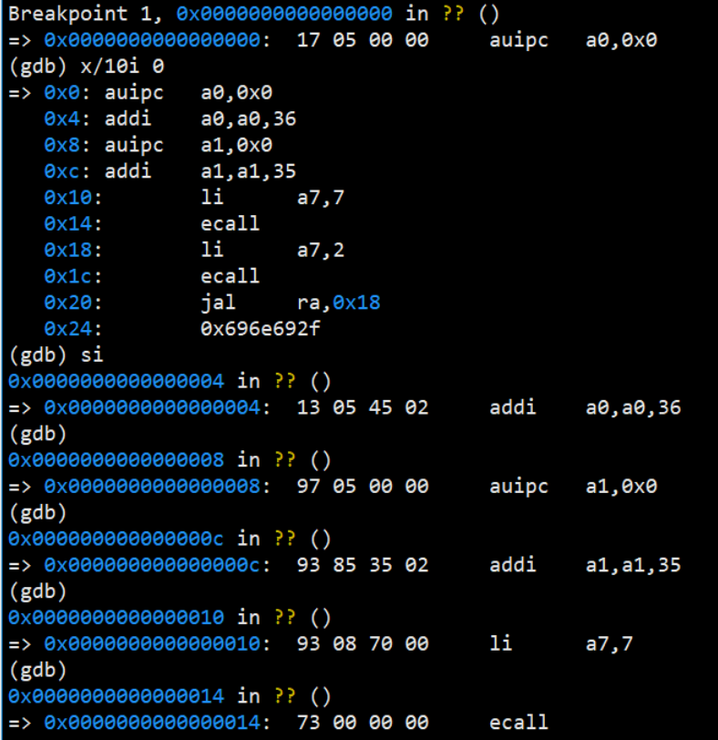
然后继续
ecall：跳转到stvec，然后改变它的值
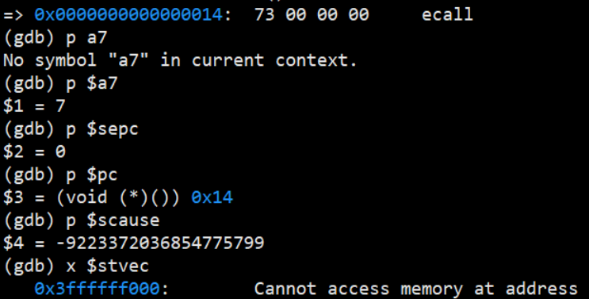
然后在寄存器stvec打一个断点，continue，此时只执行了一条ecall指令
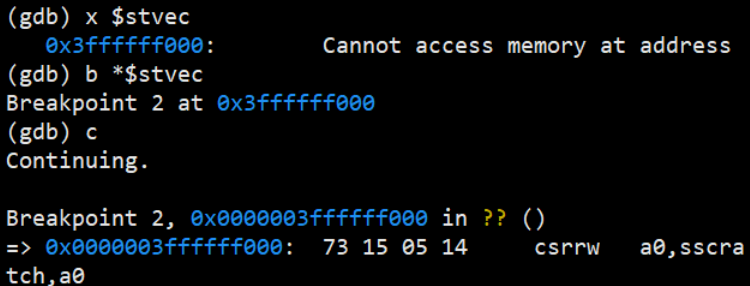
此时查看状态，
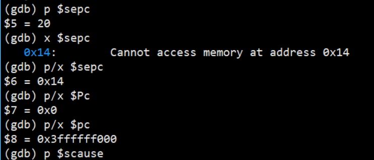
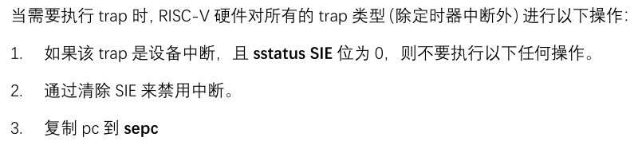
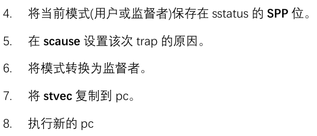
本质：一条指令有它自己固定的含义，ecall指令就是提高程序的权限，但是要跳转到一个特定的地方，这个地方就是trampoline
Trampoline (跳板)
trampoline.S (汇编代码)
-
对 ecall 瞬间的状态做快照，就是保存到trapframe中（保存到地址空间的下一段3ffffff000）
-
填充
struct trapframe(proc.h) -
利用 $sscratch (S-mode scratch) 保存所有寄存器
-
切换到内核栈 (相当于切换到进程对应的 “内核线程”, L2)
-
切换到内核地址空间
- 修改 $satp (S-mode address translation and protection)
- sfence.vma
-
跳转到
- 痛苦时间解除，进入 C 代码
继续
对于xv6的进程，执行ecall，xv6进程的地址空间上面有两页，
- ecall完了以后，pc就指向最上面，trampoline跳板，trampoline.s的内容
- 然后是trapframe宏
现在有一个临时寄存器的可以用，就是sscratch，该寄存器就赋值成了trapframe的地址
这个sscratch寄存器，用户进程是看不见的，操作系统留了一个寄存器在自己手上，这时发生作用，和a0寄存器的值临时交换
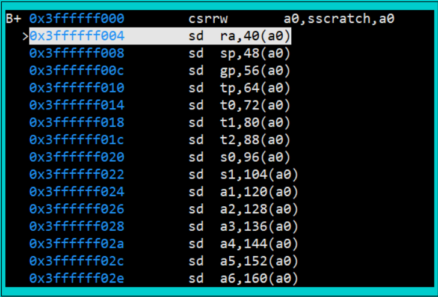
然后si一直执行下去，把当前ecall瞬间所有的寄存器都保存到trapframe那个寄存器里面去
然后再把sscratch那个寄存器换回来了，又把a0换回来了
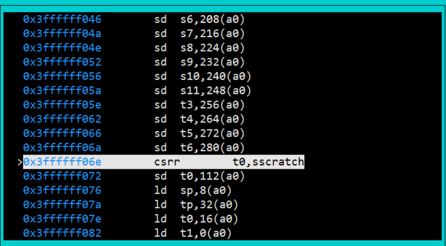
然后会执行一个csrw，会把satp这个寄存器（系统模式下和页地址翻译相关的寄存器）
总结：执行了一系列的指令，这些指令会把ecall所有用户的寄存器现场都保存到trapframe，
然后执行一个satp，把页表切回内核的页表，这时的地址空间就发生了变化
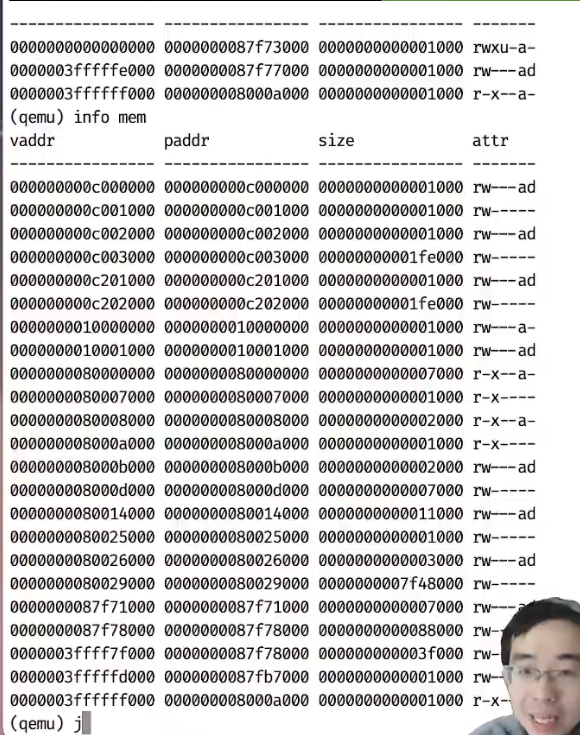
观察可发现：0000003ffffff000 0000000080007000 0000000000001000 r-x--a-：代码还在（才能继续执行程序），但是多了很多一一映射的地址，
这个时候其实我们已经切换到了内核代码执行了
然后进入了usertrap的C语言代码
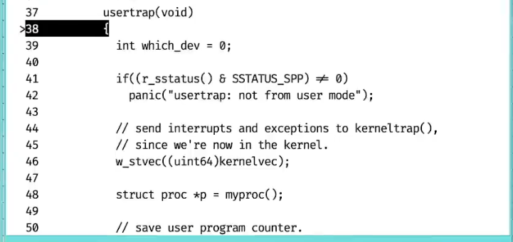
通过vscode也可以看到进程trapframe，然后可以看到进程里面的各种变量；此时可以完整地调试操作系统的C语言程序代码，（刚才有一段很小的汇编，把ecall瞬间所有的状态寄存器保存了下来，存下来后就可以以普通的数据结构的方式去访问他了）
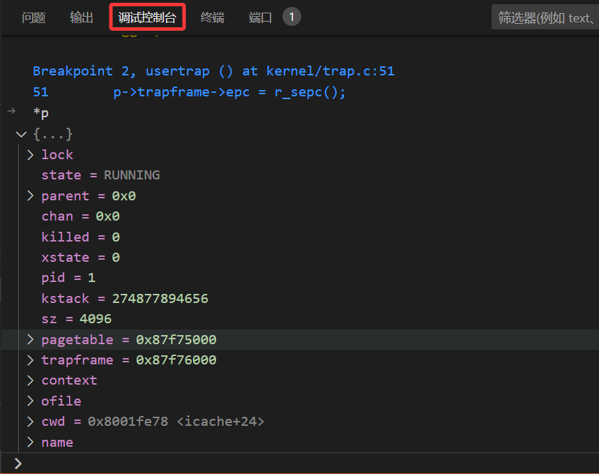
- 打开中断
- 执行syscall的函数
- 会把系统调用的编号取出来，num这里是7
- 然后去查一张表syscalls，找到SYS_exec对应于sys_exec（第7个系统调用）
- 然后就会进入sys_exec，
void
syscall(void)
{
int num;
struct proc *p = myproc();
num = p->trapframe->a7;
if(num > 0 && num < NELEM(syscalls) && syscalls[num]) {
p->trapframe->a0 = syscalls[num]();
} else {
printf("%d %s: unknown sys call %d\n",
p->pid, p->name, num);
p->trapframe->a0 = -1;
}
}
static uint64 (*syscalls[])(void) = {
[SYS_fork] sys_fork,
[SYS_exit] sys_exit,
[SYS_wait] sys_wait,
[SYS_pipe] sys_pipe,
[SYS_read] sys_read,
[SYS_kill] sys_kill,
[SYS_exec] sys_exec,
[SYS_fstat] sys_fstat,
[SYS_chdir] sys_chdir,
[SYS_dup] sys_dup,
[SYS_getpid] sys_getpid,
[SYS_sbrk] sys_sbrk,
[SYS_sleep] sys_sleep,
[SYS_uptime] sys_uptime,
[SYS_open] sys_open,
[SYS_write] sys_write,
[SYS_mknod] sys_mknod,
[SYS_unlink] sys_unlink,
[SYS_link] sys_link,
[SYS_mkdir] sys_mkdir,
[SYS_close] sys_close,
};
然后解析参数，exec要执行的是/init
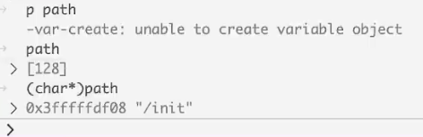
uint64
sys_exec(void)
{
char path[MAXPATH], *argv[MAXARG];
int i;
uint64 uargv, uarg;
if(argstr(0, path, MAXPATH) < 0 || argaddr(1, &uargv) < 0){
return -1;
}
汇编做的事情知道了，然后C的事情就是它得到了一个这样的状态机
- 被封存到了一段内存trapframe中（这段内存是preprocess）
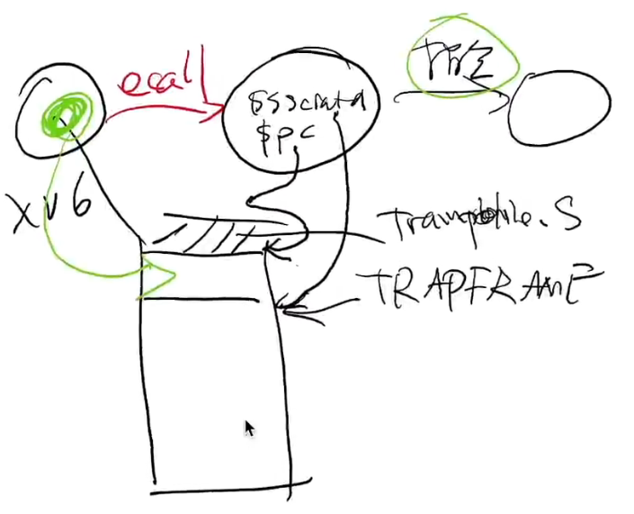
进入qemu的monitor
可以看到整个计算机系统当前的状态
- 我们的进程从0开始的内存是可读可写可执行，而且user可以访问，所以我们的pc访问0x14是合法的
- 但是0x3ffffff00是可读可执行，且user是访问不了的，说明处理器做了存储保护
以下就是内存地址空间，u就是用户可以访问的，然后下面两个就是内核才可以访问的
0000003ffffff000 0000000080007000 0000000000001000 r-x--a-：代码
0000003fffffe000 0000000087f76000 0000000000001000 rw---a-：数据
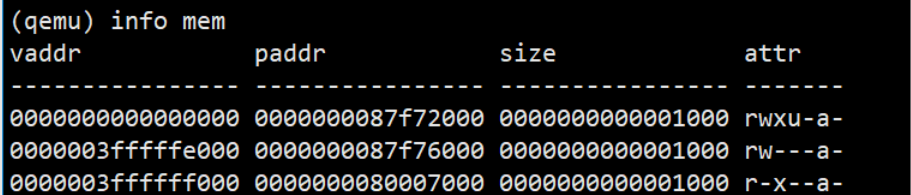
例子：
syscall是一个黑盒，我们不知道操作系统里面干了什么，但是它可以把我们进程里的一部分状态改变；比如说read buf，buf里被操作系统写入了值
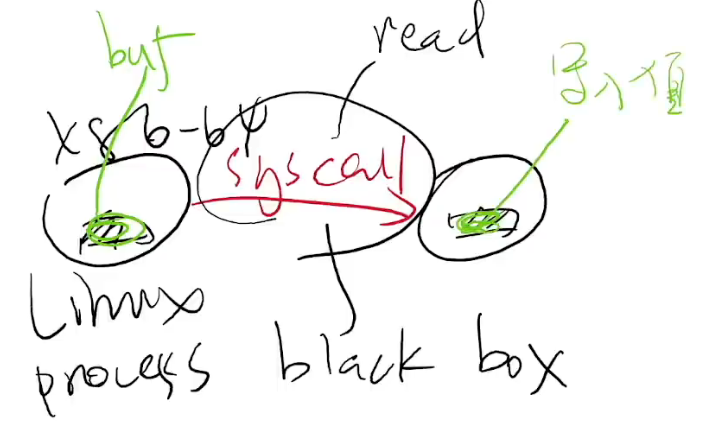
调试¶
使用vscode调试时，要将.gdbinit的以下行注释掉，与vscode有一点冲突（因为gdb连接被建立两次，一次vscode触发，一次gdbinit触发，会出错；只使用gdb调试就不需要）：
set confirm off
set architecture riscv:rv64
# target remote 127.0.0.1:26000
symbol-file kernel/kernel
set disassemble-next-line auto
set riscv use-compressed-breakpoints yes
然后vscode直接F5调试，会在main.c的第一行停下来
qemu快捷键¶
ctrl+a 然后c可以切换到monitor
ctrl+a 然后x可以推出qemu
xv6是运行在一个qemu的模拟器里面的，
qemu是有一个monitor的, 然后如果有一个图形界面的话, 如果如果有一个图形界面的话, 那么你你可以按CTRL加二进入那个monitor, 但是你即便没有图形界面, 实际上你也可以在这里进入monitor
monitor
- 然后可以info mem，可以看到所有的地址空间
虚拟地址 物理地址 size attr - info register
项目文件¶
kernel¶
-
kernel.ld：链接的脚本
-
最终所有的文件链接成一个叫做kernel的二进制代码
lsl@ubuntu:~/Desktop/code/study/MIT6.S081/xv6-labs-2020$ file kernel/kernel
kernel/kernel: ELF 64-bit LSB executable, UCB RISC-V, version 1 (SYSV), statically linked, with debug_info, not stripped
# 64位的可执行文件，然后RISC-V
user¶
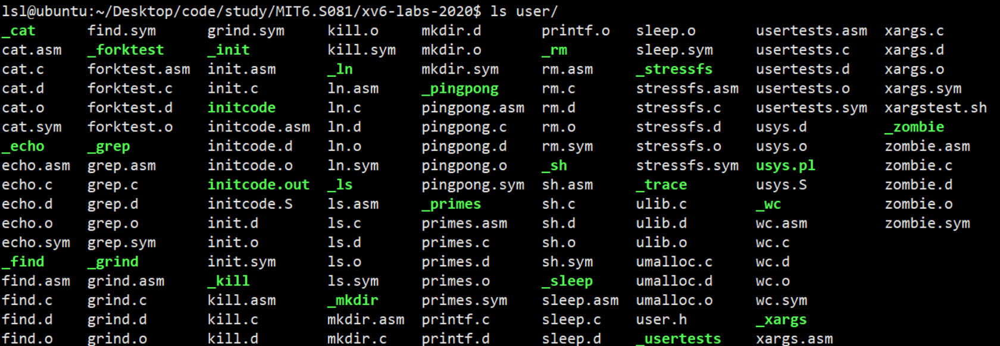
- 有shell
- initcode
这就是用户态的各种各样的程序
- 用了硬编码，如果是以下划线开头的可执行文件，就会拷到文件系统里
- make fs时创建文件系统时，就会把这些可执行文件拷到文件系统里，操作系统内核就可以看到这些文件，然后加载它们
xv6在编译的过程中，产生：
- sh.o：目标文件
- sh.d：用了gcc的编译选项，生成了dependence文件， 使得makefile能够识别依赖关系
- sh.asm：整个文件的汇编，方便调试阅读
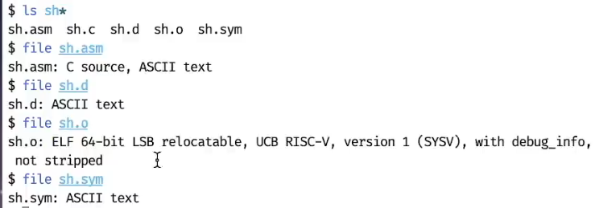